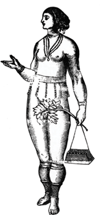

Avant 1400
Bien avant l’arrivée des colons, à l’époque précolombienne, trois grands peuples indigènes se répartissent le territoire du Venezuela : Les Arawaks, les Caribes et les Cumanagotos. En effet, ces différents groupes ont chacun leur propre langue et possèdent une manière de vivre différente les uns des autres. Chez les Arawaks, les habitations sont construites sur des pilotis. Ce type d’habitat a inspiré les colons, qui ont surnommé ce territoire la « petite Venise», devenu aujourd’hui le Venezuela.
